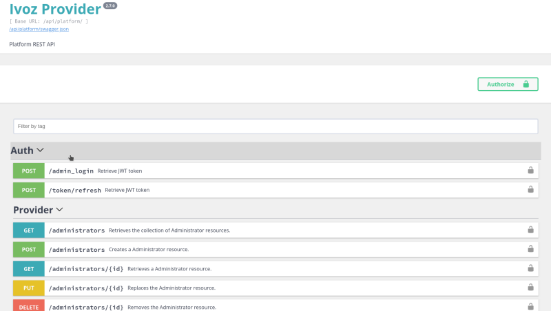
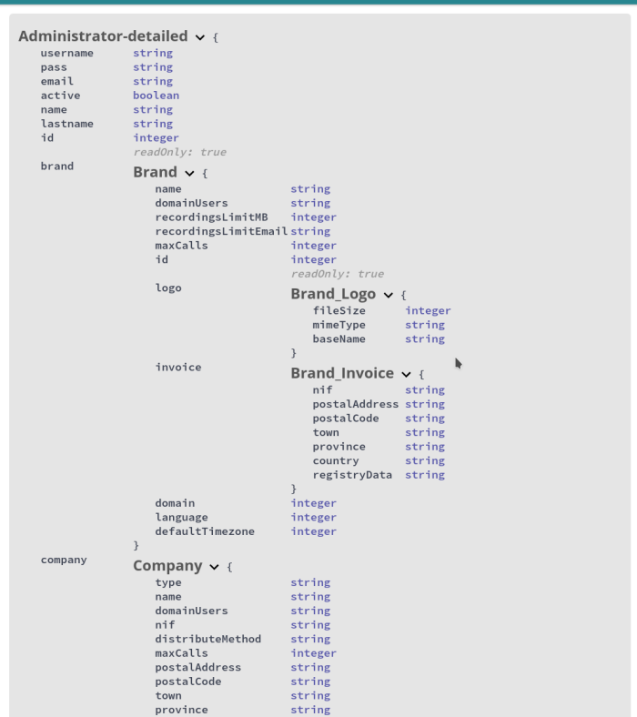

Cliente web incorporado¶
Las APIs incluyen su propio cliente web para que puedan ser probadas fácilmente. Cliente web de la API de Plataforma por ejemplo.
La API requiere solicitar un token de acceso mediante unas credenciales de administrador válidas. Esto puede ser realizado desde la sección [Auth] > [POST /admin_login] del cliente web. Será necesario hacer click en el botón Try it out, escribir las credenciales en el formulario y pulsar sobre execute para enviar la petición. La respuesta debería contener un token de acceso y un token de renovación.

Una vez solicitado el token, será necesario copiarlo en el botón Authorize que se encuentra en la parte superior de la página. El tiempo de vida del token es de una hora. Una vez expirado es posible hacer uso del token de refresco para conseguir un nuevo token de acceso sin la necesidad de reenviar las credenciales de administrador.
Con el token correctamente introducido, es posible hacer click en [GET /administrators], Try it out y Execute para comprobar el correcto funcionamiento de la API. Igualmente, a través de Response content type se puede seleccionar en formato de respuesta deseado entre las opciones facilitadas (JSON o LD+JSON en este ejemplo).

También es posible filtrar y ordenar la respuesta mediante los campos de entrada del formulario.
Especificación
El cliente web contiene la definición de los modelos de entrada y salida de la API.
